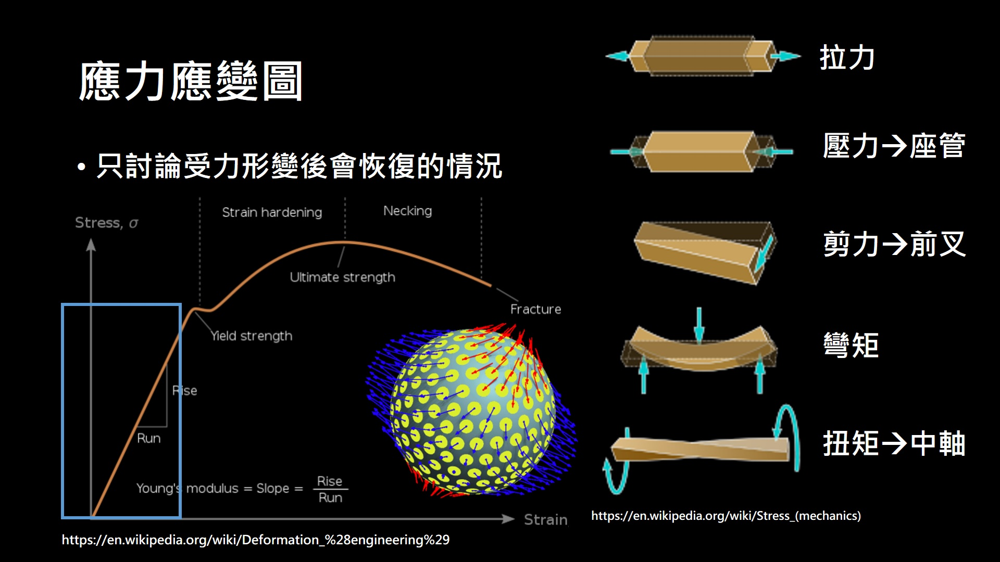
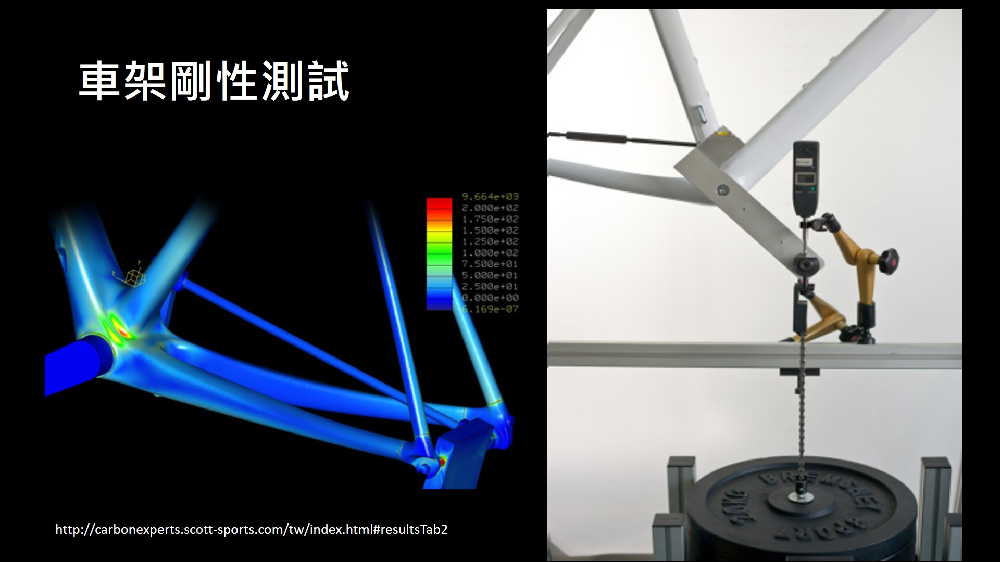

車架剛性如何影響騎乘
一、強度跟剛性
強度一般是對於某個材料去做測量，例如碳纖、鈦、鋁等自行車架常見的材料。當然不同的材料會有不同的強度，這個我們等等可以來看數據。而材料的強度就是能承受不斷裂，或是永久形變的最大強度，這邊的強度是壓力，也就是會跟作用的面積有關，當然對於消費者而言會直接跟你說個重量，也就是車手如果體重超過這個重量，那在使用這個車架或輪組就會很危險，另外如果瓦數夠高的話，那你也要在意材料強度，因為瓦數就是瞬間的施力，可能會把車架踩爆。而剛性則是針對某個物體做一些測試，例如拉伸、扭轉等，看當下的施力跟形變，剛性測試的力或力矩通常不會太大，也就是會讓該物體的形變恢復，不會造成永久形變或是破壞，所以相較於剛性，個人覺得強度比較重要。
這邊就是自行車車架常用的材料強度，可以看到碳纖強度幾乎接近鈦車[1]，但是密度卻很低，就表示碳車可以做到很輕，所以現在碳纖材料就會出現在各種物品中。而單純就鈦合金跟碳纖維的數據看起來，碳車跟鈦車除了重量差異外其餘差不多，如果車架完全一樣且其餘裝備也一樣，只有材料不同的話騎平路感覺應該也差不多。
| 材料 | 抗拉強度 (MPa) | 彈性係數 (GPa) | 密度 (kg/mm2) |
|---|---|---|---|
| 碳纖維 | 900 | 120 | 1.4 |
| 鋁合金 | 570 | 73 | 2.7 |
| 鈦合金 | 950 | 110 | 4.4 |
而有篇論文就利用有限元素法[2]，將相同形狀但是把材料換掉後，看看車架的形變與受力最大的地方，這篇論文是在討論垂直剛性，是假設正上方有約 250 公斤的車手，可以看到座管上方受到的力最大，而對於不同材料而言，最大形變量，也只有 0.5 mm 左右而已，並不是很大，對於碳車而言更只有不到 0.2 mm。
 |
|---|
| 圖一 不同材料的垂直形變[2] |
二、應力與應變
所以車架的剛性代表形變量，越硬形變越小，對於相同形狀的車架來說，不同材料的分子或原子結構不同，所以剛性也不同。當然對於不同形狀的車架而言剛性也不同，但是一般在講公路車架都是，以常見的鑽石型或是菱形車架為主，而一般車友間在講的剛性又有正向與側向剛性，正向剛性就是施力後會被壓縮多少，側向則是施一力矩後會轉動多少。當然實際上沒有這麼簡單，不過我們可以從最單純的彈簧來看，在彈性限度內的彈簧 外力跟伸長量成正比，外力除伸長量就可以得到彈力常數 k。但如果是任意物體的話，因為是連續體的關係，所以雖然我們只對某一方向施力，但是在其他方向也會有力跑出來，所以通常會把材料的受力稱為應力，當然也會有其他方向的形變，就會把材料的形變說成應變，所以通常會寫成 {F} = {k}{x}，其中大括號表示張量或矩陣，分別稱為應力與應變張量，用來描述其他方向的力 彈力常數跟形變。
|  |
|---|
| 圖二 不同材料的垂直形變[3, 4] |
就像從氣球的正上方去壓，結果也會有往旁邊的形變，就表示氣球有受到除了正上方以外的力。而應力可分成五種，分別是壓力、拉力、剪力、彎矩跟扭矩，如圖所示。其中壓力跟拉力是作用在同一直線上，剪力跟彎矩的力作用在不同直線上，扭矩就是類似扭毛巾的旋轉的力，而一般我們在講的剛性是指這張圖的某一小段。
那麼以車架與其他部件來說受到那些應力呢，前面已知座管會有受到來自體重的應力，這些應力會隨著車架形狀分散到其他地方，而騎乘時大部分時間手是藉由把手支撐，所以對於把手來講也會有受到彎矩的應力，前叉與後上管就會受到人給的力與地面給的剪力，另外在煞車時也會受力讓整個車架稍微短一些。
三、車架剛性測試
一般在做測試的時候就是掛個重量上去測形變，五通部分的話則是模擬人的踩踏，先裝類似曲柄的機構然後在下面掛重量，就可以去測出五通的剛性了。
|  |
|---|
| 圖三 車架剛性測試[5] |
 |
|---|
| 註冊並訂閱網站使用表現預估功能 |
而德國的 tour 雜誌也會對許多車架去做剛性測試，就有網友把那些資料整理成一個表格，從這個表格來看可以明顯地知道，不管是框煞或碟煞、還是空力跟爬坡車，並不存在哪種車會比較硬的關係，可以看到最新的斯特拉也沒有舊的瑞克多硬，大概只有空力車坐管數據上比較硬，因為空力車坐管截面積通常會比較大的關係。而 EMONDA 比 MADONE 硬則是因為 ISP 的關係，然後拿下多次環法冠軍的 F8 除了坐管外，BB 與前叉的部分也沒有特別硬，SL7 DISC 與 SL5 相比也沒有更硬，其他更詳細的數據可以到以下網址，或是自行去購買 tour 雜誌來觀看。
https://weightweenies.starbike.com/forum/viewtopic.php?f=3&t=165586
四、車架軟硬的耗瓦
那麼車架軟硬到底會怎麼影響騎乘呢，我們先來看這種可以鎖前避震的城市車種，這種車在騎較崎嶇的路面時可以將避震打開，就可以把來自路面的震動抵銷掉部分，然後騎在路面較好的路上就可以把避震鎖起來，所以騎乘起來就會比較舒適。當然當在發力加速時沒有鎖避震的話，就會有部分的力傳到避震上被抵銷掉，就體感上來講會覺得沒這麼靈敏，所以看到下方影片，力仍然會傳遞過去但是會慢一點，當然也有一小部分的力會被抵銷。
 |
|---|
| 圖四 力的傳遞[5] |
當然現在功率計非常普及，大多數人也在講功率，那麼就一般在騎的公路車而言，車架形變會不會造成瓦數被消耗掉呢。對於一理想的材料來說，只要能恢復原狀，那麼其實就沒有任何的能量消耗，但是實際是振動時會有阻力，就會有多的功耗，也就是材料在恢復形變時會由阻尼消耗能量。所以我們只要估算我們對不同硬度的彈簧做功，做功越多就相當於要消耗更多的能量，所以可以看到對於相同的外力而言，越硬的彈簧確實做功就會越少，這也表示越硬的車架損失的能量也越少，不過相較於騎程中的風阻，或是爬大山的重力，甚至是滾阻，這一點的耗散都可以算是微不足道。
如果均瓦有 200 瓦且踏頻有 90 的話，搭配 160~170 mm 的曲柄 施力約為 42 N，會有不到 1 J 的能量拿去給車架做形變，當然在踩踏時瓦數會有變化，所以把剛性差異跟踏頻考慮進去，這樣估算下來大概也不到 1 W。當然如果你非常的在意這一點功率損耗，或是你覺得硬的車比較好騎，那可以買硬一點的車來騎乘，畢竟雖然耗瓦差不多 但體感會差很多。
五、越硬越好嗎
講了這麼多終於進入大家想知道的事情，我們已經知道車架越硬能耗就越少，那車架是不是也越硬越好呢，當然如果只看人的施力被車架損耗的話，確實越硬越好 但另一方面也會有來自震動的能量，這些能量如果沒有在其他地方消耗掉，傳到人體時就會藉由人體肌肉的震動消耗，所以通常越不平整的路面就會選用較軟的車架，像巴黎盧貝就會有耐力型的車種拿下冠軍。而美利達就有說為什麼斯特拉 V 沒比上一代硬[6]，畢竟以公路賽來說 即便是市民組，時間也會有一兩個小時才能完賽，一級賽事甚至會騎到五六個小時，所以通常公路車都不會太硬。如果喜歡踩起來比較硬的可以選計時車，畢竟現在已經很少計時賽要騎這麼久，不過車架的選擇通常是很多綜合考量，例如空力、重量、幾何、大小等，剛性只是其中之一，而且剛性不像前面幾項可以自行選擇，也不像胎壓一樣想打多少就打多少。
六、總結
車架的剛性跟強度是兩個不同的東西，車架的強度通常是告訴你限重多少，車架的剛性則是告訴你形變量會有多少，強度越高剛性不一定越高，反之也是。而不論是框煞或碟煞，空力或爬坡車，並沒有哪種車的車架剛性會比較高，單純看製造商當時在製造時的選擇而已，就現在的公路車而言，車架剛性是購買前就要決定，不像輪胎胎壓可以想打多少就打多少，當然如果錢夠多也可以多買幾台剛性不同的車輪流騎，否則以車架剛向來說通常是買了然後人去適應。當然車架形變量越大就會有越多能量在車架中，但是相較於風阻，重量與滾阻的影響是非常小的，且車架的形變也會消耗從地面傳來的震動，除非路面夠平或能承受地面一直來的震動，不然以公路賽來說在完賽前就會先體力耗盡，其實就跟瓦數一樣，瓦數越大當然越好，但問題在於這麼大的瓦數你能持續多久。所以當問題是：「越硬是否能騎越快時」，因為變數只有一個，可以肯定的告訴你「是」，但是如果把其他變數納入考量，就沒有辦法簡單的告訴你是或不是，因為會牽扯到的東西太多了，所以一般新款的車架只會強調空力跟輕量，因為這兩個對速度的影響遠大於其他因素。
參考資料
[1]. 林建成（2010）。自行車車架之結構分析與最佳化設計研究。﹝碩士論文。國立臺灣師範大學﹞臺灣博碩士論文知識加值系統。 https://hdl.handle.net/11296/6g82b7。
[2]. Shah, J., Shah, S., Mehta, G. et al. Vertical stiffness of bicycle frame and its influence on rider comfort. SN Appl. Sci. 2, 1629 (2020). https://doi.org/10.1007/s42452-020-03410-w
[3]. https://en.wikipedia.org/wiki/Deformation_%28engineering%29
[4]. https://en.wikipedia.org/wiki/Stress_(mechanics)
[5]. http://carbonexperts.scott-sports.com/tw/index.html#resultsTab2
[6]. https://www.cyclingweekly.com/products/bingo-new-merida-scultura-is-lighter-more-aerodynamic-and-more-compliant